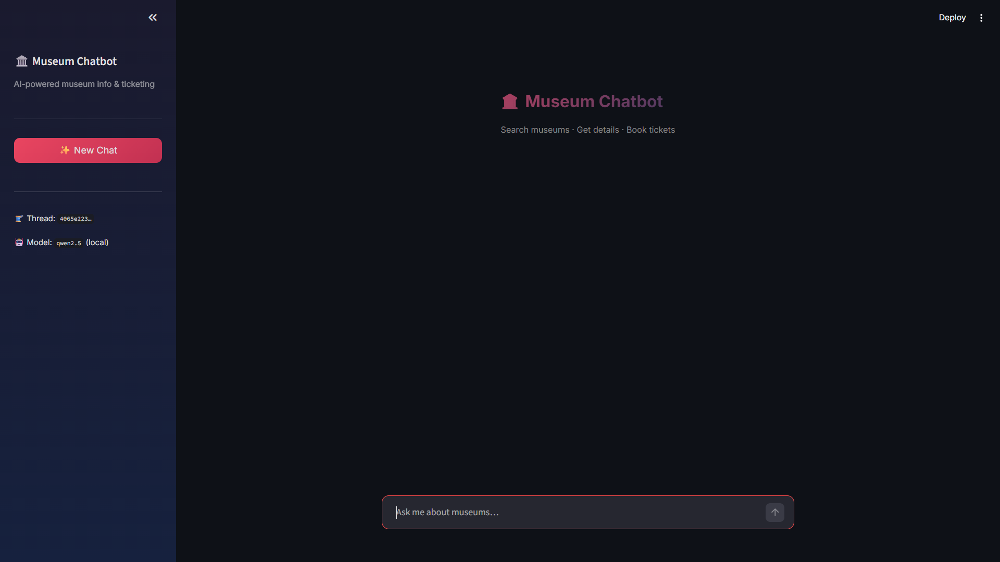

Discover Indian museums, explore detailed information, and book tickets — all through natural conversation with an AI agent.

Tourists and locals wanting to visit Indian museums face fragmented information — scattered across multiple websites with no unified way to search, compare, and book tickets. Museums need 24/7 booking capability but can't afford dedicated staff for every inquiry.
A conversational AI agent that understands natural language queries about museums. Users can search by city or theme, get detailed info (timings, prices, facilities), and complete ticket bookings — all within a single chat interface. The agent remembers context across turns, enabling natural multi-step workflows like search → details → book.
Typo-tolerant museum search using Python's difflib. Users can type "Kalkutta" and still find museums in Kolkata.
ReAct agent with MemorySaver checkpointing — remembers the entire conversation context for multi-turn workflows.
Search museums → get details → book tickets with automatic price calculation for adults and children.
Intelligent message trimming keeps conversations within the LLM's 8192 token context window without losing critical context.
Users can start fresh conversations with a new thread ID, keeping previous booking history intact while starting a clean chat.
Dedicated search parameter for wheelchair-accessible museums, making the tool inclusive for all users.
llm.py — LangGraph ReAct agent with history trimming & checkpointingtools.py — Three LangChain tools: search_museums, get_museum_details, book_ticketdb.py — MySQL connection pool for handling concurrent requestsapp.py — Streamlit web UI with chat interface & new conversation buttonterminal.py — CLI entry point for terminal-based interactionStep-by-step walkthroughs of the chatbot performing museum discovery, ticket booking, and error handling.
search_museums_toolSearch museums by city name, theme, or keyword. Supports wheelchair accessibility filtering. Uses fuzzy matching to handle typos and partial names.
get_museum_details_toolRetrieve complete information for a specific museum — address, timings, prices, facilities, overview, and closed days.
book_ticket_toolBook tickets for a specific museum, date, and party size. Automatically calculates total price based on adult and child counts.
qwen2.5 local via Ollama)
LangGraph (ReAct + checkpointing)
LangChain
Streamlit
MySQL + Connection Pool
Python difflib
The qwen2.5 model would sometimes fabricate museum data instead of calling the database tools. Solved by refining the system prompt with strict instructions to always use tools for museum queries, and building an evaluation dataset to test accuracy across different query types.
Booking workflows can span 10+ messages, easily overflowing the 8192 token limit. Implemented
trim_messages with start_on="human" to intelligently prune older messages while
keeping the conversation coherent. Made the max history configurable via
MAX_HISTORY_MESSAGES.
Users type museum names in many ways — "indian museum", "Indian Musuem", "indain museum". Implemented fuzzy matching with Python's difflib to find the closest match and return relevant results even with significant spelling errors.